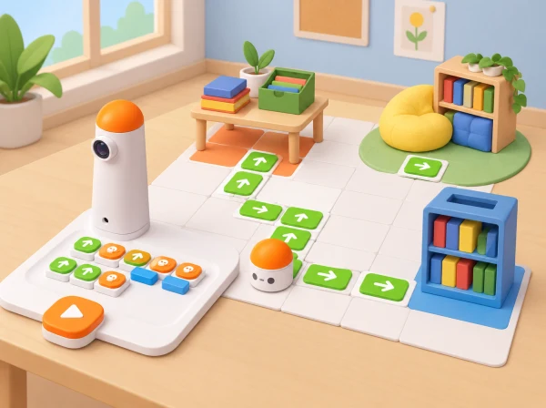

Com podem preparar una visita guiada, amb un mapa reduït a escala, un recorregut programat i una presentació que explique la història i els espais compartits del nostre centre?
MatataBot és el visitant nou. Cada equip investiga quatre espais públics del centre, representa’n la distribució en un plànol simplificat, crea maquetes lleugeres de paper i codifica una ruta per a guiar la classe. El grup prepara un discurs breu amb informació contrastada i divideix la guia en parades; un llibre fictici pot fer de fil narratiu, però el robot no transporta càrrega. La seqüència localitza i reinterpreta els objectius de MatataBot’s Guide en un itinerari de benvinguda propi.
Prepareu el Coding Set complet, paper gran per al mapa, regles, retalls de cartó i paper, cinta de pintor, targetes de símbols, llapis, fulls de recerca i un full de registre. Demaneu abans a l’escola informació pública o autoritzada sobre la història i cultura del centre, i delimiteu quins espais es poden observar i representar. No fotografieu persones ni inclogueu horaris, codis d’accés, noms complets o informació de seguretat. Si no hi ha plànol compartible, mesureu o estimeu només relacions de proximitat entre espais amb permís docent, i indiqueu que el mapa és esquemàtic. Feu una prova de desplaçament del robot per comprovar quina longitud correspon a cada ordre i quines caselles reals caben en el full.
Les coordenades (x, y) són una eina per a trobar i comunicar una ubicació en el mapa; MatataBot no rep parelles de coordenades com a codi. L’alumnat tradueix un itinerari entre punts en blocs físics d’avanç, retrocés i gir, tenint en compte l’orientació inicial.
Les quatre sessions sumen 180 minuts, com la durada publicada del projecte de referència: 45 minuts per investigar i iniciar la visita, 90 per al mapa, les maquetes i la programació, i 45 per a les presentacions i la reflexió. La distribució en quatre trobades permet assecar, revisar i provar els materials entre sessions.
Conserveu la font i data de cada dada, l’esbós, l’escala escrita, la quadrícula, la llegenda, les coordenades de les parades, les maquetes, el guió, la seqüència de blocs i els resultats de les proves. Valoreu amb tres nivells —amb modelatge, amb alguna pista, de manera autònoma i explicada— si l’equip (1) representa posicions relatives i usa l’escala amb coherència; (2) localitza llocs en una graella sense confondre (x, y) amb una ordre del robot; (3) programa i depura la ruta considerant orientació; i (4) comparteix dades verificades amb una audiència. L’èxit no depén de la ruta més curta: també compten una visita segura, comprensible i fidel al mapa.
Oferiu plànol d’alt contrast, símbols en relleu, coordenades en targetes grans i versions de ruta amb menys parades. Els rols poden ser investigador/a, cartògraf/a, constructor/a, programador/a, guia oral, narrador/a amb comunicació augmentativa o auditor/a de fonts; no cal fer la visita física per participar. En lloc d’una excursió, podeu treballar amb notes i esbossos de llocs públics preparats pel centre. Manteniu models lluny dels passadissos de moviment, no tapeu sensors o rodes i atureu el robot abans de moure maquetes. La visita real es fa només en zones autoritzades i amb les normes habituals del centre.
La classe pot vincular el recorregut a un espai de lectura, un pati, una aula taller o un element de memòria del centre. Si es vol afegir patrimoni de la localitat, useu fonts municipals, de biblioteca o d’una entitat cultural i distingiu el que està documentat del que és una narració inventada. Els personatges i el fil del llibre són creats per l’alumnat; els fets de la visita es verifiquen per separat.
MatataBot’s Guide és un projecte per a presentar l’escola a un robot visitant: la guia publicada proposa 45 minuts d’investigació i visita, 90 minuts per a dibuixar el recinte a escala, crear maquetes de paper i codificar ruta/discurs, i 45 minuts de presentació i retorn. Aquesta adaptació conserva investigació de la cultura i distribució del centre, mini-plànol a escala, maquetes tridimensionals, ruta programada i discurs de guia; els converteix en una benvinguda pròpia amb fets locals verificats i protocols de privacitat. A diferència de la font, ofereix opcions basades en esbossos preparats quan la visita no és possible i explicita que les coordenades són de mapa, no instruccions que MatataBot entenga directament. Els personatges, guió, mapa, pictogrames i imatge són originals. La parada de préstec connecta també amb la idea de destinacions de Delivery Animals, sense afirmar que el robot transporte llibres.